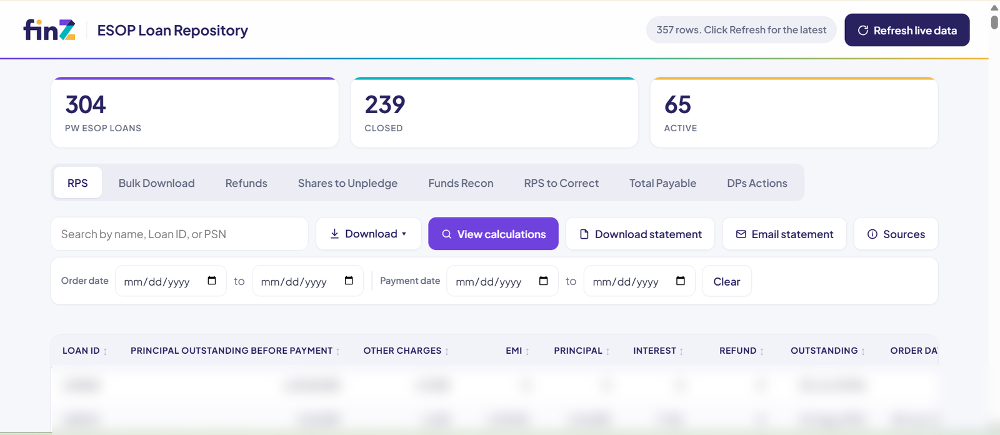

Eleven spreadsheets became one system of record
Interest accrual, share sales, repayment, surplus refunds and share release each lived in a different file owned by a different team. Nobody could answer what a borrower owed today without opening several of them and reconciling by hand.
This screen computes every repayment schedule from a single canonical formula, joined across eleven live sources. The tab bar is the point: one working surface for each real job, rather than one spreadsheet per team. Bank reconciliation parses to ₹64,05,97,403 and matches the bank’s own summary.